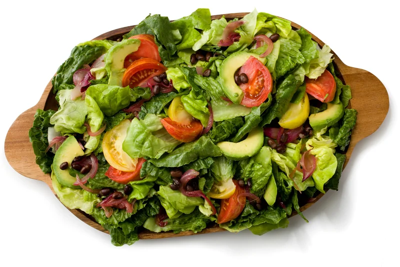

Cuban Salad

Description
Cuban salads typically are refreshing, yet uncomplicated, and they're always a nice addition to what often can be a heavy Cuban meal.
Served with a loaf of crusty Cuban bread isn't a bad idea either!
Ingredients
- 2 heads romaine lettuce, chopped
- 4 medium tomatoes (such as Campari®), cut into wedges
- 2 medium avocados - peeled, pitted, and cubed
- 1 medium red onion, halved and thinly sliced
- ½ (15.5 ounce) can black beans, rinsed and drained
- ¼ cup fresh lime juice
- 1 teaspoon honey
- 1 clove garlic, minced
- ½ teaspoon ground cumin
- ¼ teaspoon salt
- freshly ground black pepper to taste
- ½ cup extra-virgin olive oil
Steps
- Combine romaine, tomatoes, avocados, onion, and black beans in a large bowl; toss to combine.
- Whisk lime juice, honey, garlic, cumin, salt, and pepper together in a small bowl. While constantly whisking, stream in the olive oil until dressing is well combined.
- Drizzle some of the dressing over the salad, toss, taste, and add more dressing if desired. If there's any extra dressing, refrigerate for later use.